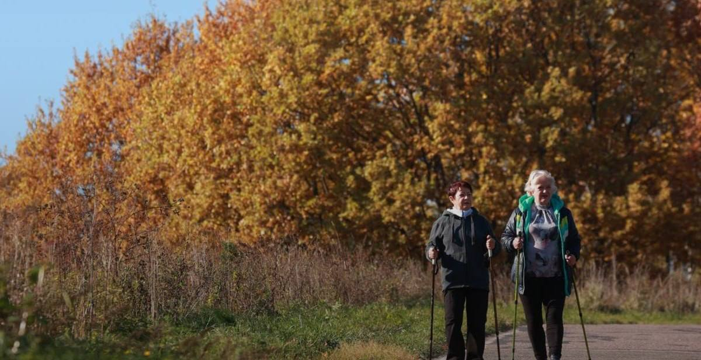

Топор Live
@toporlive
Топор Live
@toporlive
Число пенсионеров в России достигло почти 405 млн Соцфонд.

⚡️Число пенсионеров в России достигло почти 40,5 млн, — Соцфонд.
Ожидается, что к 2027 году показатель увеличится до 43 млн человек.
Ожидается, что к 2027 году показатель увеличится до 43 млн человек.